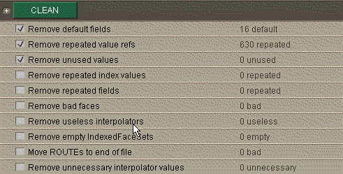
After clicking the CLEAN button, this may be different.
This means that the size of the file has been reduced by about 20% due to the removal of the unnecessary text.
Chisel used to be a commercial tool available from Trapezium Development LLC. It is no longer developed be Trapezium and its creators, Michael St. Hippolyte and Joh Johannsen staff of Trapezium, generously placed the code and software in the public domain. Michael Louka fixed some bugs and added a new "Simplify DEF names" chisel, and released this updated version as Chisel 2.1 (HVRC Edition) via the Halden VR Centre web site in 2005. D. G. van der Laan has contributed support for preserving texCoord and texCoordIndex fields when joining shapes by color. This is unsupported freeware.
Always run Chisel on a copy of your model, in case it fails and creates an unreadable VRML file.
This is particularly important when using the Reduction tasks.
THE SOFTWARE IS PROVIDED "AS IS", WITHOUT WARRANTY OF ANY KIND, EXPRESS OR IMPLIED, INCLUDING BUT NOT LIMITED TO THE WARRANTIES OF MERCHANTABILITY, FITNESS FOR A PARTICULAR PURPOSE AND NONINFRINGEMENT. IN NO EVENT SHALL THE AUTHORS OR COPYRIGHT HOLDERS BE LIABLE FOR ANY CLAIM, DAMAGES OR OTHER LIABILITY, WHETHER IN AN ACTION OF CONTRACT, TORT OR OTHERWISE, ARISING FROM, OUT OF OR IN CONNECTION WITH THE SOFTWARE OR THE USE OR OTHER DEALINGS IN THE SOFTWARE.
Copyright 1998-2000, Trapezium Development, LLC
Portions copyright 2005-2010, Michael Louka.
Portions copyright 2008, D.G. van der Laan.
This application uses HTML parsing technology from Arthur Do Consulting.
Chisel is a program for improving the quality, performance and reliability of VRML worlds. Chisel offers authors a wide range of tools for working with VRML files: diagnostic tools for locating errors, cleaners for converting dangerous and cluttered code to safe and clean code, lossy and non lossy data reducers, file reorganizers, special effects and compression. Chisel combines the technology found in Trapezium's Vorlon, the freeware VRML 97 syntax checker in wide use by VRML authors around the world, with advanced 3D information processing techniques with a straightforward user interface.
Reducing file size and improving reliability and performance go hand in hand. Probably the most valuable tools provided by Chisel are the Cleaners, because they make files both smaller and better. The cleaners remove code that is unnecessary, redundant, unusable etc. The size reduction is often dramatic, and the resulting file is more likely to run consistently across browsers.
Other tool sets provided by Chisel include Condensers, which provide non-lossy or insignificantly-lossy reduction by changing the representation or precision of the data; Reducers, which perform polygon reduction; Mutators, which transform models in various ways; and Reorganizers, which change the way a world is divided into parts.
This example is a very simple example of a file which is described in a less than optimal way. The list of coordinates has two unused coordinates, and the 8 vertices of the cube are repeated in coordinates 0-7 and coordinates 10-17. The file is called bigcube.wrl.
After clicking the CLEAN button, this may be different.
This means that the size of the file has been reduced by about 20% due to the removal of the unnecessary text.
The menu options duplicate the toolbar, with the following exceptions:
Hint: Chisel includes toolbar tips, so if you aren't sure what a particular button does, just hold the mouse over the button and a tip will appear.
Open a file
Brings up the standard file selection dialog window. Once a file is opened, it is syntax checked.
Fetch a file
Creates a local copy of a remote file specified by a url. The local copy is then opened and syntax checked. Optionally creates local copies of all files referenced by the url. Referenced files copied can be limited to either subdirectories of the original url, or any directory on the same site as the original url.
File references can be extracted from HTML as well as VRML files, and are also extracted from Javascript code in the HTML. For example, to download all the ".wrl" files from a site, just enter the url for the site.
A log of all fetched files is kepted in the directory where chisel was started, under the name fetch.log. This log file is overwritten each time another fetch is performed.
Fetch options allow control over what gets fetched. In general, fetches can be limited by site, directory, and file extension category:
- Retrieve referenced files - when checked, this option gets all files referenced from an HTML or WRL file, and depending on the file extension (see the additional Fetch options below), fetches those files. Each HTML or WRL file retrieved is checked for file references, and those referenced files are also retrieved.
- Limit retrieval to original directory and subdirectories - when set, only files from the original url directory or its subdirectories. All other file references are ignored.
- Limit retrieval to site - when set, only files from the same site as the original url are retrieved.
- Fetch GIF,JPG,PNG - when set, files with the extension ".gif", ".jpg" and ".png" are fetched. Otherwise, these files are not fetched.
- Fetch sound WAV,MID - when set, files with the extension ".wav" and ".mid" are fetched. Otherwise, these files are not fetched.
- Fetch HTML - when set, files with the extension ".htm" and ".html" are fetched. Otherwise, these files are not fetched.
- Fetch MPEG,MOV,AVI - when set, files with the extension ".mpeg", ".mov" and ".avi" are fetched. Otherwise, these files are not fetched.
Save
Saves a file using the same name used when it was loaded. The file is saved as ascii text.
Save As
Brings up a standard file selection dialog window. The file is saved under the name specified. The file is saved as ascii text.
Save Gzipped
Saves a file using the same name used when it was loaded. Leading spaces are removed from the beginning of each line in the file, and the file is saved in compressed form using gzip encoding.
Save Gzipped As
Brings up a standard file selection dialog window. Leading spaces are removed from the beginning of each line in the file, and the file is saved in compressed form using gzip encoding under the name specified..
Copy selected text to clipboard
NOTE: Chisel does not have built in text editting. However, with chisel, double clicking within a node selects the entire node. This command allows the selected node to be copied to the clipboard, so that it is available for pasting in any editor.
Redo
Redo an Undo.
Undo
Undoes the effect of the most recent set of chisels.
Stop
Stops the current set of chisels from running. NOTE: serializing cannot be stopped, and some cases stopping is not immediate.
Jump to previous error
Searches backward in the file for an error, warning, or nonconformance line. If found, the view window is scrolled to that point, and the line is displayed in red. The status bar indicates the line number and error number. The search begins from the current error if visible, otherwise from the last line in the viewer window.
Jump to next error
Searches forward in the file for an error, warning, or nonconformance line. If found, the view window is scrolled to that point, and the line is displayed in red. The status bar indicates the line number and error number. The search begins from the current error if visible, otherwise from the first line in the viewer window.
The "+" character to the left of each chisel brings up the list of chisels for each category. Clicking the checkbox to the left of a chisel enables it. To run the enabled chisels in a particular category, just click on one of the buttons above, or select a category to run from the process menu.
A chisel category button is green when any of its chisels are enabled.
Chisel incorporates the Vorlon version 1.51 VRML 97 syntax checker.
Clicking on the button runs the Vorlon syntax check. In most cases, this is not necessary, since it runs automatically when a file is loaded. The syntax check also runs automatically after any file is altered by any of the chisels.
However, in some cases, users may with to activate or disable some of the options described below during the syntax checking phase.
Humanoid Animation 1.1
Checking this option enables some additional checks for conformance with the Humanoid Animation 1.1 specification.
Disable nonconformance checks
Conformance checks are related to Table 7-1 of the VRML 97 specification, and describe some limits which a VRML 97 compliant browser must implement. A user may wish to disable these checks if the file in question is known to display correctly on the target browsers.
Disable warnings
NOTE: disabling warnings will make some of the hints associated with chisels also disappear. Some of these hints are based on warnings found in the file.
Warnings indicate unnecessary text or questionable VRML constructs. In many cases, there may be so many such warnings that the user wishes to disable them altogether.
Disable unused DEF warnings
In many cases, authors may with to preserve DEF names, and do not wish to see "unused DEF" warnings. Checking this option disables all "unused DEF" warnings.
Chisel rewrites portions of a file in an unformatted manner. To create a consistent format for the entire file, click on the button.
Remove Comments
Selecting this option removes all comments from a file during the reformat.
Wrap lines
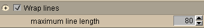
Selecting this option (default on) enables line wrap for long sequences of characters. New lines automatically occur when bracket and brace characters are encountered, so this option mainly applies to long sequences of numbers.
The maximum line length control gives the maximum number of characters for a reformatted line.
Indent
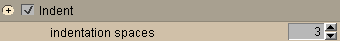
The Indent option combined with indentation spaces defines how far each line is indented. When the indent option is off, the result is that no lines are indented (i.e. functionally the same as indentation spaces set to 0).
Tab every N spaces
Converts n spaces (default 3) into a single tab character.
This section contains the chisels which eliminate the text producing warnings during the syntax check. When a file is first loaded, it is validated. If any unnecessary text is found, this button turns green: and the chisels required to remove that text are automatically enabled, which is indicated by the check mark box.
The CONDENSE category is similar, except its categories are not automatically selected, because in some cases some of the text that appears unnecessary is actually required by an external EAI application.
Remove default fields
Selecting this option removings field values which are explicitly declared with a value identical to the default field value.
Remove repeated value refs
Repeated value references are one of the most complex types of unnecessary information. The VRML 97 specification repeatedly uses a technique where a set of values is referenced by an optional set of "index" values. This chisel removes repeated values by adjusting the corresponding "index" values.
NOTE: using this chisel may create unused values. This is why the Remove unused values box is automatically selected whenever this box is selected.
NOTE: this chisel does not create "index" values. See Create index fields in the CONDENSE section for how to automatically create index values.
Remove unused values
Unused values are values which are not referenced by an "index" value. This could be any of the following:
- Coordinate node values in an IndexedFaceSet/IndexedLineSet not referenced by the coordIndex field
- TextureCoordinate node values in an IndexedFaceSet not referenced by a texCoordIndex field
- Normal node values in an IndexedFaceSet not referenced by a normalIndex field
- Color node values in an IndexedFaceSet/IndexeLineSet not referenced by a colorIndex field
Remove repeated index values
This refers to index fields where the same index value is repeated. For example, a coordIndex in an IndexedFaceSet may define a face with the coordinates: 0 1 2 2 2 3 -1. This chisel would replace the "2 2 2" sequence with the single digit "2".
NOTE: This is one of those chisels that may appear a bit unusual, but it is something that does occasionally occur with several exporters. In addition, some of the polygon reduction tools rely on this chisel to clean up IndexedFaceSets after coordinates are merged.
Remove repeated fields
When the same field is defined more than once, this chisel removes the second declaration of the field.
Remove bad faces
This chisel removes faces consisting of 1 or 2 edges.
Remove useless interpolators
This chisel removes any interpolator with 0 or 1 key.
Move ROUTEs to end of file
NOTE: this chisel should not be used if ROUTEs are contained within PROTOs. Its intended use is described below.
This chisel handles a special case of an exported bug in some versions of the 3DSMax VRML 97 exporter. In some cases this exported places ROUTEs illegally in the children field of a node. This chisel moves those ROUTEs to the end of the file.
Remove unnecessary interpolator values
When key or keyValue entries are repeated more than twice, the middle entries of the repeated sequence are unusable. In the case of keys, these middle values cannot be accessed. In the case of key values, these middle values provide redundant information. This chisel removes these middle entries in repeated sequences. It also handles the case of NormalInterpolator and CoordinateInterpolator, where the number of keyValue entries per key may vary.
NOTE: Repeating key entries twice is necessary only when discontinuous motion is required. If key entries are repeated, and continous motion is desired, this information can be removed using the Single value interpolator keys chisel.
Generate diffuseColor field for IFS
Generates a diffuseColor field for each indexed face set.
The condense category of chisels is similar to clean in that it removes unnecessary text, but in some cases such removal is lossy, and in other cases there may be external code, such as an EAI application, relying on the text. Chisels in this category should be considered carefully before use. It is highly recommended that you save the condensed file under a new name in case you need to revert to the original.
Adjust numeric resolution
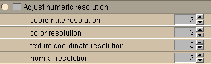
This chisel adjusts numeric resolution of Coordinate, Color, TextureCoordinate, and Normal nodes. In many cases, exporters output these numbers with a much greater resolution than necessary.
Adjust interpolator resolution
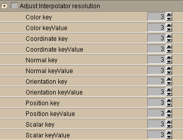
This chisel adjusts the numeric resolution of all the interpolators. The sub-options allow resolution to be indicated by type of interpolator.
Create DEF/USE
This chisel goes through the entire file, looking for duplicated node definitions. When a duplicated node is found, the first instance is DEFfed, and the subsequent instances are USEd.
Create PROTOs for interpolators
Animation sometimes creates many interpolators with the same keys. This chisel creates a PROTO with a default key and substitutes instances of that PROTO for any interpolator.
Create index fields
The VRML 97 specification often makes use of a technique where a list of values is referenced by an optional list of index values. When the index is absent, the list of values may contain many repeated values. For example, when assigning colors to faces in an IndexedFaceSet, the Color node will have one color entry per face. If there are many faces, but only a few colors, colors will be repeated many times.
This chisel creates the index field for a value list if the value list is large (>100 values) and contains many (>20) repeated values.
Remove empty IndexedFaceSets
This chisel removes IndexedFaceSets that have no faces. Note that empty IndexedFaceSets can be created by the chisels which remove duplicate values and repeated indexes.
Remove normals
Many exporters generate normals for models. However, if these normals are eliminated, the browser will calculate the normals. This is a trade off between file size, and start-up performance. In files we have tested with, in all cases the time-to-display is faster when the normals are removed.
Remove unused DEFs
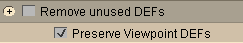
Selecting this option removes unused DEFs. The Preserve Viewpoint DEFs sub-option is provided because Viewpoint DEFs are a special case. It is impossible to determine whether Viewpoint DEFs are unused since they can be referenced from another file.
Remove unused PROTO interface fields
This chisel removes PROTO interface fields that are not referened by IS syntax within the PROTO. The unused field is also removed from any PROTO instances declaring that field.
Shorten DEF names
Renames named node instances (DEF) and their usages (USE) using shorter names (AAA, AAB, AAC, etc.).
Simplify DEF names
Substitutes characters in (DEF) node names that are neither numerals or letters with '_' while maintining uniqueness of names by adding a numeral if the simplified name is already in use. This chisel is useful when a modelling tool exports a VRML file with characters such as & and % in node which are not acceptable if the nodes are to be accessed by name from scripting languages (since while these names are legal VRML node names, they are not legal variable names in languages such as JavaScript, and some VRML viewers do not therefore accept them). This chisel is new in version 2.1.
Single value interpolator keys
NOTE: This is related to the Remove unnecessary interpolator values chisel.
This chisel examines all interpolators, and limits key entries to unique values. Subsequent repeated key entries, and their associated keyValue entries are removed. This chisel should be used if the interpolators are being used to describe continuous motion. Repeated key entries are only neessary for describing discontinuous motion.
Remove material node
Removes material nodes from Appearance nodes. By default, this is only done if textures are available.
This category contains the polygon reduction chisels. The polygon reduction provided is not the best available, but it does work well for many models, and does a reasonably good job of creating lower polygon count models for LODs and reducing models with large numbers of polygons exported from CAD systems. It is highly recommended that you save the reduced file under a new name in case you need to revert to the original.
Coplanar triangle to quad
This chisel may or may not be a polygon reduction chisel, depending on your point of view. Many exporters create only triangulated models. This chisel takes two coplanar triangulated faces, and converts them into a quadrilateral. The result is fewer polygons from the point of view of faces described in the resulting IndexedFaceSet, but from the browser point of view, the number of triangles is unchanged.
This chisel is mainly useful for those cases where the exporter creates a large number of these coplanar triangulated faces. In that case, using this chisel reduces the file size.
Remove smallest edges
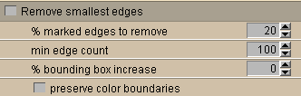
An edges is removed by assigning each edge coordinate a new value, which is the center of the edge. Only edges that are between triangles are candidates for removal. If the triangles have been reshaped due to a previous edge removal, the edge is not removed. For each edge removed by this algorithm, the resulting model has two faces with no area. These invisible faces are removed by the CLEAN chisels which run automatically after this one completes.
This chisel finds the % marked edges to remove in IndexedFaceSets with at least min edge count edges and attempts to remove those edges. Edge removal starts with the candidate set of edges which are ordered by size, the smallest edges are removed first. Subsequent edge candidates are only removed if they are between two triangles that have not been reshaped by previous edge removals.
The preserve color boundaries option limits this algorithm to reshaping triangles that are surrounded only by triangles of the same color.
The % bounding box increase option handles the case where a large model is made up of a number of connected smaller models. The algorithm does not reshape triangles that fall into the area of overlapping bounding boxes between IndexedFaceSets. This option allows that unaffected area to be expanded.
Remove smallest triangles
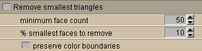
A triangles is removed by taking the three coordinates of a triangle, and making each coordinate the coordinate of the center of the triangle.
Merge parallel edges
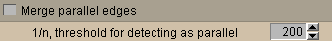
This algorithm takes two edges which are parallel or nearly parallel, and converts these to a single edge. The threshold boundary can be used to select what is "nearly parallel", smaller numbers select more edges.
The chisels in this category merge or break up files, IndexedFaceSets, and ElevationGrids. Chisels in this category should be considered carefully before use. It is highly recommended that you save the reorganised file under a new name in case you need to revert to the original.
Uninline files
This chisel takes files inlined using the Inline node, and merges them into the current file. It handles resolving conflicting DEF names, and may rename some DEFs in the merged file.
Un-PROTO
Attempts to remove PROTOtypes, replacing them with equivalent nodes throughout the scene graph. Use with caution.
Turn Shapes into Inlines
This chisel turns all Shape nodes into Inline nodes, creating the inlined files in the process.
If a single Shape node is selected, only that single Shape node is turned into an Inline node.
Join Shapes by color
Attempts to merge Shapes that are the same colour.
Split IFS by color
This chisel breaks a Shape node containing an IndexedFaceSet into one Shape node for each color specified in the colorIndex field. If the IndexedFaceSet does not have a colorIndex field, the field can be created using the Create index fields chisel.
Split IFS by connectivity
This chisel breaks a Shape node containing an IndexedFaceSet into several different Shape nodes. A new Shape node with an IndexedFaceSet is created for each connected set of polygons in the IndexedFaceSet. If all polygons are connected, the file is not changed.
Split ElevationGrid
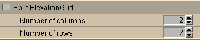
This chisel splits an ElevationGrid into a number of smaller ElevationGrids, each contained in their own Transform node. The resulting set of ElevationGrids is visually identical to the original larger ElevationGrid.
The Number of columns and Number of rows options control how the ElevationGrid gets split.
Turn top level DEFs into Inlines
Moves the contents of the top level DEFs into inline files (one per DEF). This Chisel splits the original file into a set of files. This can be useful if yuou want to optimise just one top-level branch of a scene later and then use the Uninline chisel to merge the files back into a single file again. Use with caution as converting into a set of inlines and then uninlining cannot always be achieved successfully -- in particular if there is interdependence between the children of the top-level nodes.
The chisels in this category modify the visual appearance of indexed face sets. Chisels in this category should be considered carefully before use. It is highly recommended that you save the reprganised file under a new name in case you need to revert to the original.
Point cloud
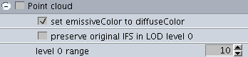
This chisel converts IndexFaceSet shapes into IndexedPointSets (point cloud representations).
The set emissiveColor to diffuseColor option enables you to control the appearance of the resulting point cloud and preserve original IFS in LOD level 0 options enables the generation of a LOD (level-of-detail) structure where the first level is the original indexed face set with a range in metres as supplied (default 10m).
Wireframe
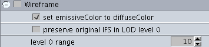
This chisel converts IndexFaceSet shapes into IndexedLineSets (wireframe representations).
The set emissiveColor to diffuseColor option enables you to control the appearance of the resulting wireframe and preserve original IFS in LOD level 0 options enables the generation of a LOD (level-of-detail) structure where the first level is the original indexed face set with a range in metres as supplied (default 10m).
java -mx128m trapezium.chisel.CLChisel report_file wrl_files
The report_file is an HTML report created from chiseling any file. It is created by selecting the "File" then "Generate HTML Report" menu option in the GUI version of chisel after chiseling a file. The default name for report files is based on the original wrl file name. For example, the file "test1.wrl" would have an html report named "test1.chiseled.html"
The wrl_files are a list of one or more ".wrl" files, with wild card characters allowed. For example, files can be specified as "*.wrl".
The command line version of chisel applies all the chisels in that report to all the files specified on the command line. The resulting files are named:
orfile.chiseled.wrl
file.chiseled.wrz (this is done if the "-gzip" flag is specified on the command line)The above naming convention can be avoided, and the original names preserved, by using the -preserve option.
The options allowed on the command line are: